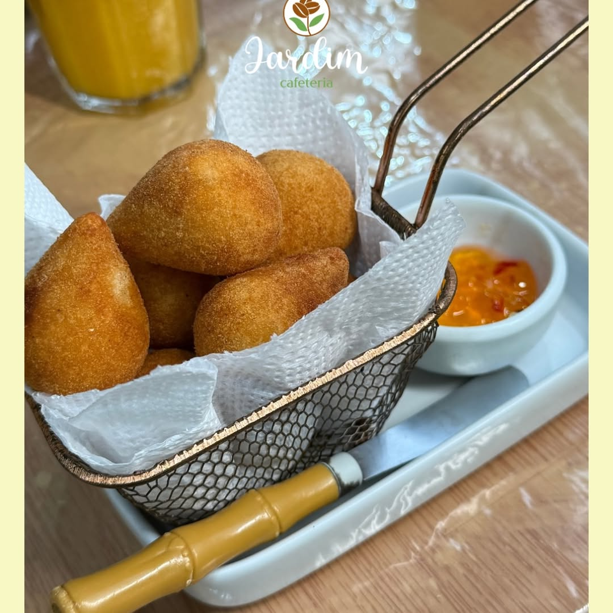

João Pessoa, Jardim Cidade Universitária
Seu dia pede
um intervalo
no Jardim.
Um cafezinho, algo gostoso à mesa e um lugar para estar com calma.
Esperamos você na Rua Desembargador Aurélio M. de Albuquerque, 595.

Do café ao lanche,
escolha o seu favorito.
A nossa mesa tem opções para uma pausa só sua ou para dividir com quem você gosta.

Pequenas na cesta.
Grandes na vontade
de repetir.
Nossas mini coxinhas podem acompanhar o café ou chegar à mesa para dividir. Confira os itens e a disponibilidade no nosso cardápio.
Ver lanches no cardápioSeu encontro no Jardim
Recebemos consultas para pequenas comemorações aos domingos. Converse com a gente sobre datas, espaço e possibilidades para o seu evento.
Consultar uma comemoraçãoA porta está aberta
para um bom encontro.
Para tirar dúvidas, consultar um evento ou saber mais antes da visita, fale com nossa equipe.
Conversar no WhatsAppFale com a gente
Rua Desembargador Aurélio M. de Albuquerque, 595, Jardim Cidade Universitária, João Pessoa/PB.Consultar localização no Google Maps(83) 3235-4837Acompanhe nosso InstagramAntes de pedir
Como consulto o cardápio?
Abra nosso cardápio digital para ver opções e valores atualizados. Para dúvidas sobre algum item, use nosso WhatsApp.
Posso consultar o espaço para um evento?
Sim. Converse com a equipe sobre pequenas comemorações aos domingos. Datas, formato e condições são combinados diretamente com a gente.
Onde fica o Jardim?
Estamos na Rua Desembargador Aurélio M. de Albuquerque, 595, no Jardim Cidade Universitária, em João Pessoa. Use o link de localização para planejar sua visita.